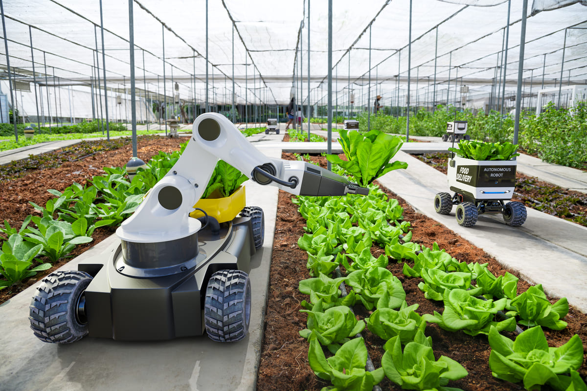
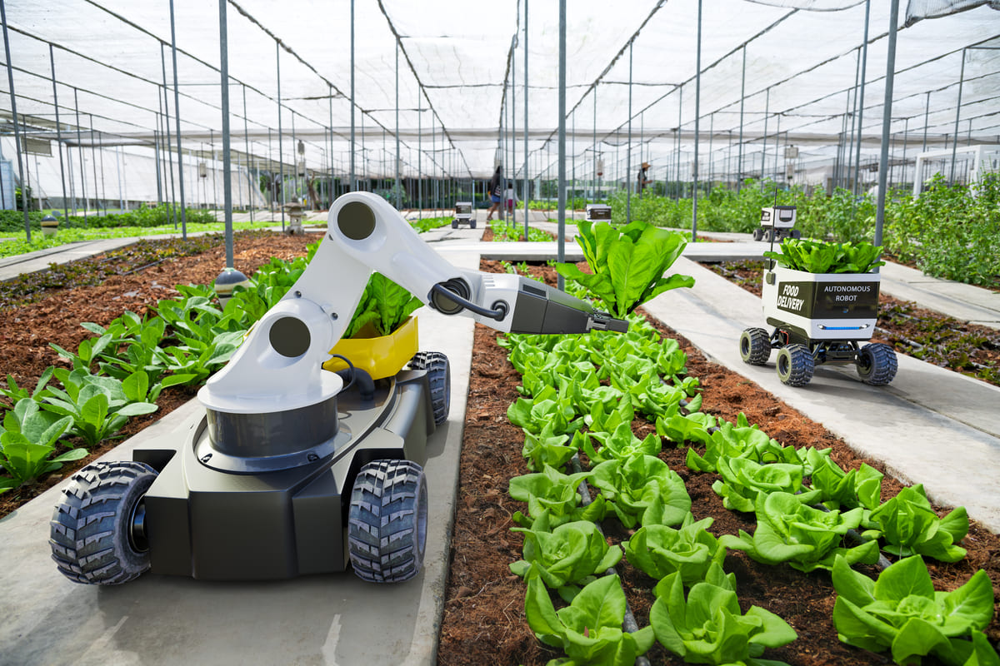

Bem-vindo ao TerraTech!
Sua Conexão entre o Campo e a Cidade, Colhendo Oportunidades
TerraTech
No TerraTech, acreditamos no poder da inovação e da educação para transformar a agricultura e a vida rural, conectando o campo e a cidade de maneiras nunca antes imaginadas. Nosso objetivo é promover o desenvolvimento sustentável e a inclusão digital, capacitando comunidades rurais e urbanas a aproveitar as oportunidades que a tecnologia pode oferecer.
Assuntos abordados
Tecnologia na Agropecuária
Descubra as mais recentes inovações tecnológicas aplicadas à agropecuária, promovendo um futuro mais produtivo e sustentável. Veja como a agricultura de precisão, o monitoramento remoto e o uso de drones estão transformando a produção agrícola. Junte-se a nós nessa jornada rumo a um futuro mais eficiente e inovador no campo!


 



Carreira em Agronomia
Explore como a agronomia é uma ciência vital que combina biologia, química, e tecnologia para melhorar a produção agrícola e garantir a segurança alimentar. Com um papel central na economia global, a agronomia oferece diversas oportunidades de carreira para aqueles que desejam fazer a diferença no mundo.